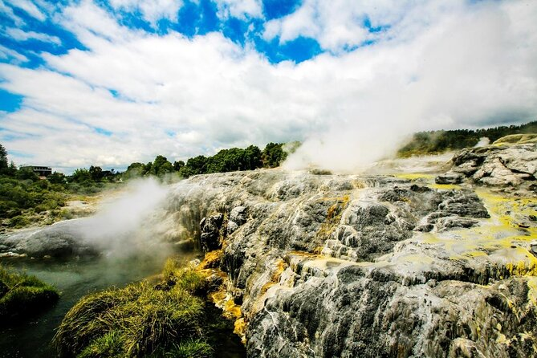
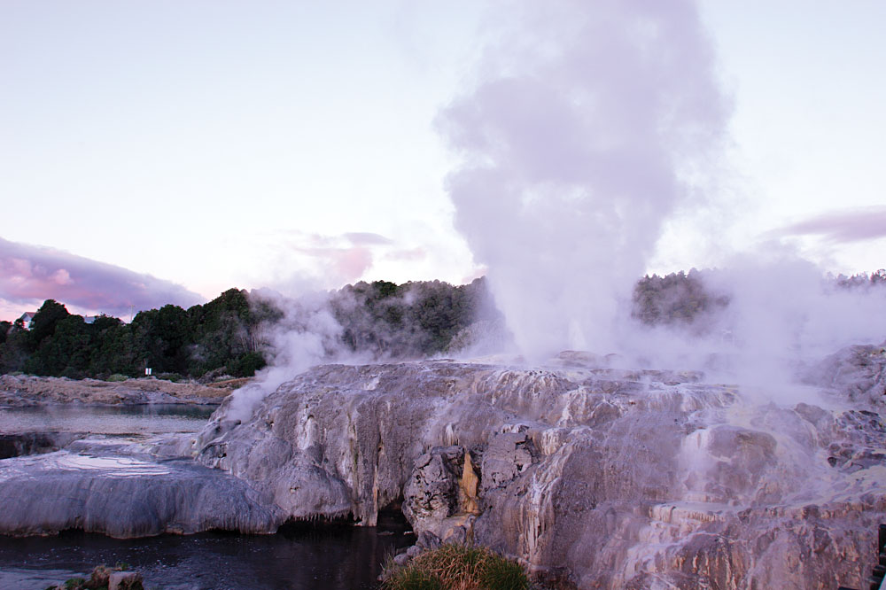

Amazing Stuff To See At Te Puia
Geothermal Valley
Our traditional Maori explanation of Te Whakarewarewa Geothermal Valley states that this place was one of the area’s ‘Te Pupu’ and ‘Te Hoata’, the Goddesses of Fire, emerged from the earth’s core while trying to find their brother Ngātoro-i-rangi, who was stranded on Mount Tongariro. As they rose to the surface looking for their brother, they left part of the fire they carried, creating geysers, hot springs and mud pools, creating the geothermal activity that remains today.
Fun Facts About Geothermal Valleys
- There are over 500 pools and 65 geyser vents, each with their own name, are found in the 70 hectare Te Whakarewarewa geothermal valley in Rotorua.
- Because New Zealand sits along 2 active techtonic plates, there is a lot of geothermal activity.
- There are many sites across New Zealand for harvesting energy from these geothermal locations, this type of energy has many benefits such as being relatively cost effective, reliable, sustainable, and relatively environmentally friendly.

